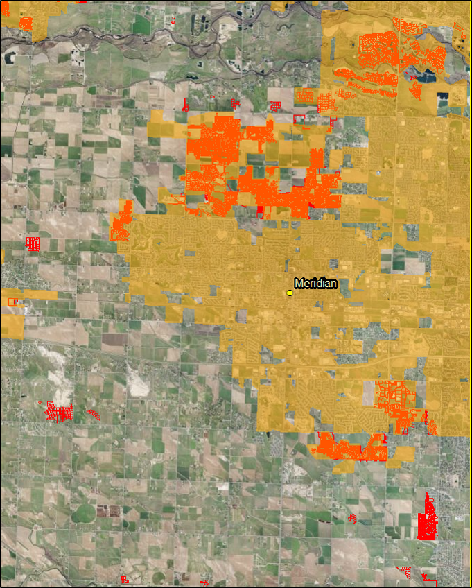

Urbanization and land use change are widespread phenomena and the primary drivers of global ecological change. Researchers from both the social and natural sciences have investigated the effects that land use change has on environmental services and the effectiveness of regulatory bodies in mitigating its harmful impacts. Although there is research on local governmental bodies and their effectiveness in controlling land use change, county governments have often been overlooked. In this article, I study the effectiveness of county governments in controlling land use change using a regression discontinuity design (RDD). The RDD is a quasi-experimental approach that provides stronger support for claims of causality than basic regression analysis. I use the RDD along with multinomial and binary logit estimation to study the capacity of the Ada County government to control land use change in the Treasure Valley, Idaho.
UNDERSTANDING LAND USE CHANGE:
There is a substantial amount of research that looks at land use change. Some of this research examines the impact that land use change has on the environment. These impacts include disruptions in ecological function and the discharging of waste in the environment. Other land use change research looks at efforts to mitigate these impacts using regulatory tools by local governments. The tools that are most often used are zoning and adequate facilities provision ordinances. Much of this latter kind of land use change research has looked at the implementation of these regulatory tool within city boundaries. However, it is not always the case that land use change occurs within the jurisdiction of the city.
Treasure Valley

Since we can see that there was a substantial amount of the development outside of the city limits boundaries we need to zoom out and consider the local government body that s responsible for these areas. In this case, that is the county government.
The previous research on land use change that have looked at county governments have found that the county government land use regulations have effectively controlled sprawling land use development.
However, some researchers have found that not all county government are the same. This issue makes it difficult to generalize the results from one county to another. But they exhibit two types of patterns in terms of scope of power. The first pattern consists of strong county governments that share land use change regulation responsibilities with a single large municipal government. The second pattern is a county government that is responsible for the unincorporated areas and then shares responsibilities in certain areas with several different smaller municipalities.
d. The previous research has focused on the first pattern of county government. That is, the strong county government that shares regulatory responsibilities with a large municipality. This focus has been at the expense of understanding the second pattern.
This leads me to my contribution which is that I look at the county government that fits the second pattern and see if it is an effective driver of land use change. Additionally, I use the regression discontinuity design which provides better support for causal claims than basic regression analysis. I will review the RDD when I discuss my data and methods.
The area that I look at in my research is the Treasure Valley. And the treasure valley offer an excellent opportunity to study land use change regulation because the two counties, Ada and Canyon, are set up like natural experiment. For instance, since both counties are in the Treasure Valley, they can be expected to share many environmental and geographic qualities. The way in which the two counties differ is in their planning activities. For the period that I am looking, 2001 to 2011, Ada County has been active in developing plans for future development whereas canyon county has been much less active. Therefore, since the two counties share similar environmental and geographic qualities, we potentially can attribute the difference in land use change between the two counties to planning activities.

↘
↗
Theory and Hypothesis
Optimal timing of development model
To test the effectiveness of the Ada County government in driving land use change, I follow the recent land use change literature and use the optimal timing of development model. This theory suggests that land owners or developers will change the land use of their parcel if they find that it maximizes their utility. Additionally, land owners will change the land use of their parcels when they find that the cost of waiting outweighs the benefits.
Using this theory in the context of Ada County, I have two hypotheses that I test. For both hypothesis, I expect that Ada County will have a discernible effect on land use change that fits the Blueprint policies. But for each hypothesis, I assume a different level of enforcement intensity. For the first hypothesis, I assume that Ada County will be a strong enforcer of land use change regulation. What I mean by this is that I assume that Ada County will try to restrict change in land use from undeveloped to developed as much as possible. Specifically, I first hypothesize that if a parcel is in Ada County, then the parcel is less likely to change land use from an undeveloped land use to a developed land use than a parcel in Canyon County.
H(1): If a parcel is in Ada County then the parcel is less likely to change land use from undeveloped land use to a developed land use than a parcel located Canyon COUNTY
For the second hypothesis, I assume that Ada County will be less strict in enforcing land use change but will still encourage it in impact areas. So, secondly, I hypothesize that if a parcel is in Ada County, then it is more likely to change land use from undeveloped to developed if it is located within a designated city impact area.
H(2): If a parcel is in Ada County, then it is more likely to change land use from undeveloped to a developed land use if it is located within a designated city impact area.
Therefore, the null hypothesis in this case that the Ada County government will not an affect land use change Ada County.
H(0): Ada County government has no effect on land use change
Data
Dataset
- 88893 undeveloped parcels in Ada County and Canyon County as of 2001
- Land use change
- Parcel Size
- Distance to nearest city
- Distance to water feature
- Population distance